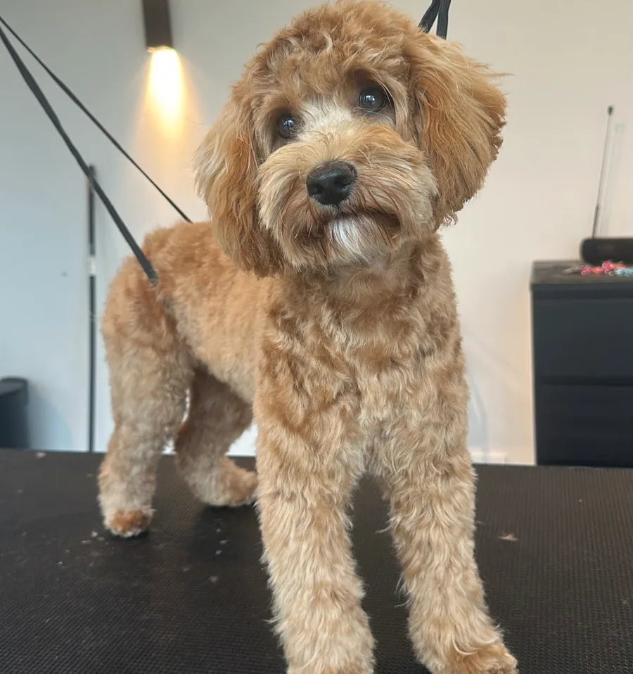
CookieTrimbeurt
Wassen, föhnen, knippen en mooi afwerken. Je hond gaat naar huis in model, en zo zacht als hij eruitziet.
Bij Haute Dog Coiffure krijgt je hond alle aandacht. Eén hond tegelijk, rustig en zonder haast. Trimmen, plukken, ruiven of gewoon een fijne wasbeurt, in mijn eigen salon aan de Paalstraat.
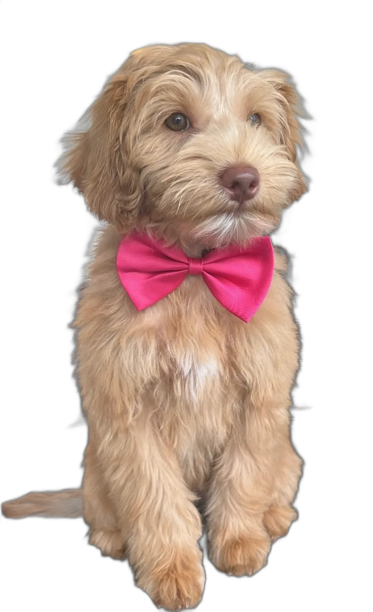
Ik ben Ilse. Sinds 1 juli ontvang ik jullie viervoeters in mijn eigen trimsalon aan de Paalstraat in Schoten. Een gezellige plek waar je hond zich meteen thuis voelt.
Ik werk één op één, zodat ik alle tijd heb voor je hond. Eerst een beetje vertrouwen opbouwen, dan pas de schaar erbij.
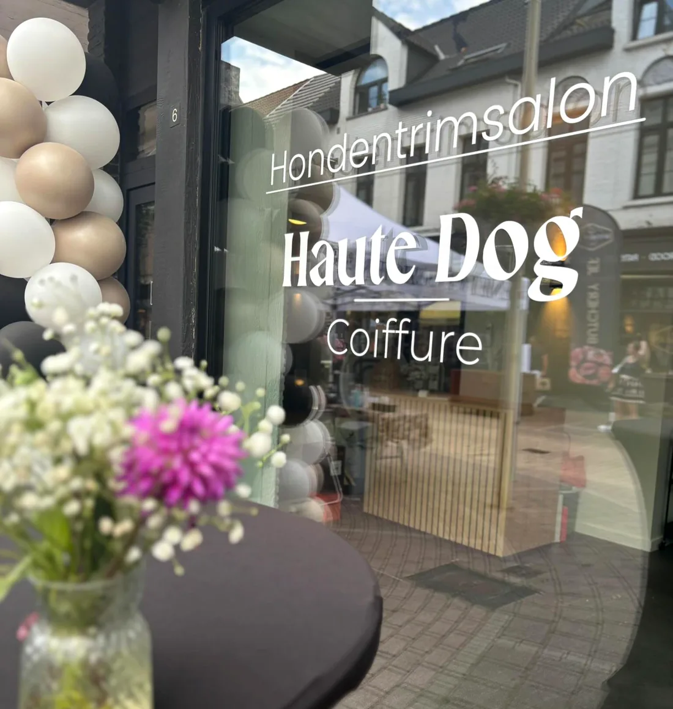
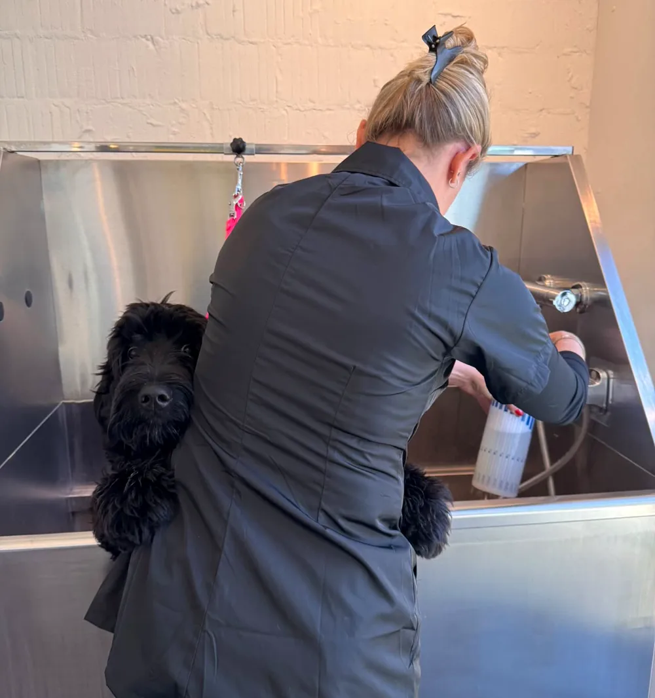
Paalstraat 6, SchotenVan een eerste kennismaking voor je puppy tot een volledige trimbeurt. Ik kijk samen met jou wat je hond nodig heeft.

CookieWassen, föhnen, knippen en mooi afwerken. Je hond gaat naar huis in model, en zo zacht als hij eruitziet.
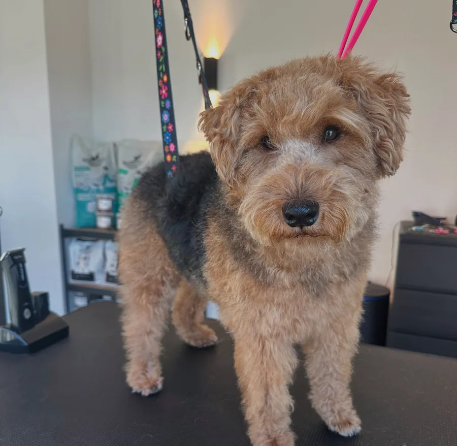
RoxyVoor ruwharige rassen zoals terriërs en ruwharige teckels. De dode haren gaan eruit, zodat de vacht zijn structuur houdt.
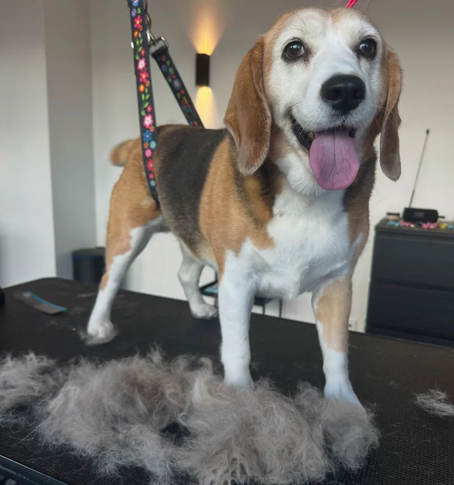
EmmaOok kortharige hondjes komen graag eens naar de kapper. Losse haren en ondervacht verdwijnen, je hond voelt weer heerlijk zacht.
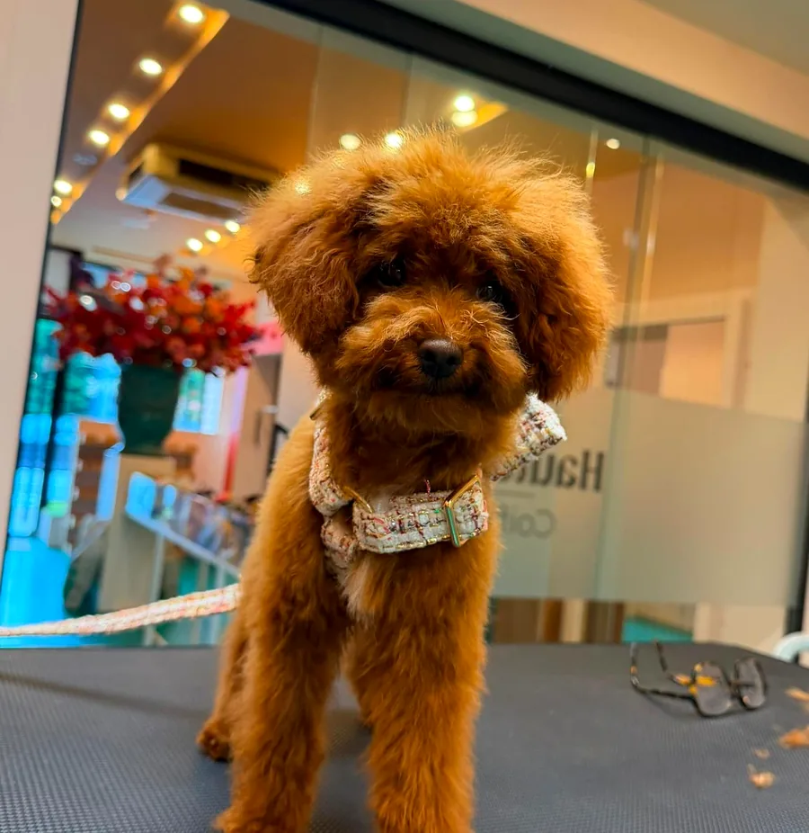
LouisRustig kennismaken met het föhnen, de tafel en de schaar. Zo leert je pup dat de kapper iets fijns is.
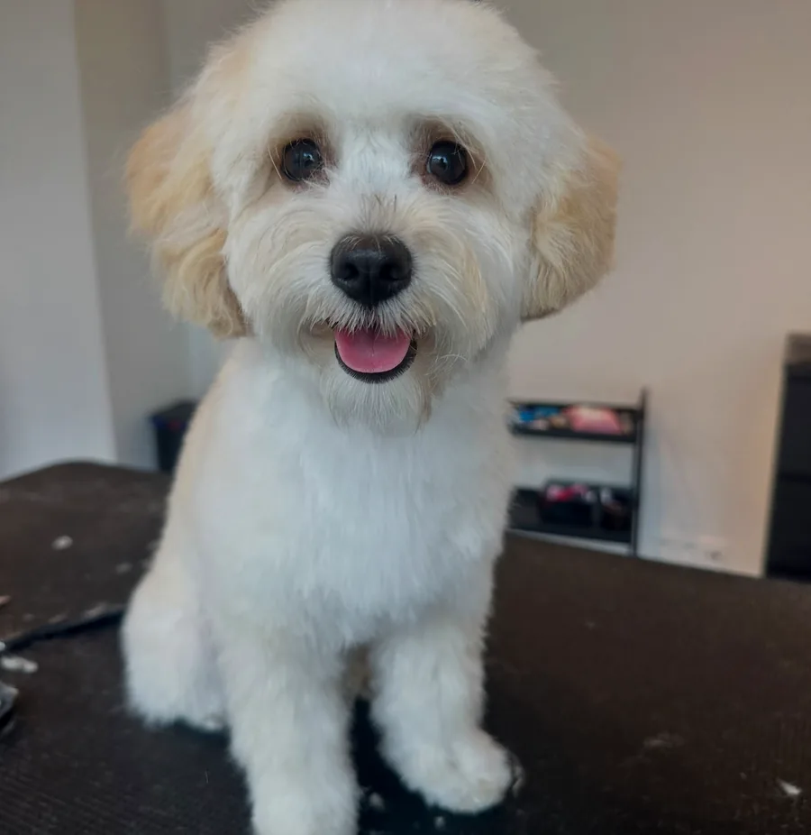
LilliEen frisse wasbeurt, uitkammen en klitten eruit. Nageltjes knippen kan ook. En ja, ook katten zoals Maine Coon Wally gingen al ontwold naar huis.
Is je hond gespannen bij de kapper, of durfde niemand hem nog te behandelen? Vertel het me gerust vooraf. Samen zoeken we een aanpak die voor hem werkt.
De prijs hangt af van het ras, de vacht en de grootte van je hond. Vraag gerust je prijs op.
Op Instagram laat ik graag zien wie er langskwam. Hier een paar van die fiere snoetjes.
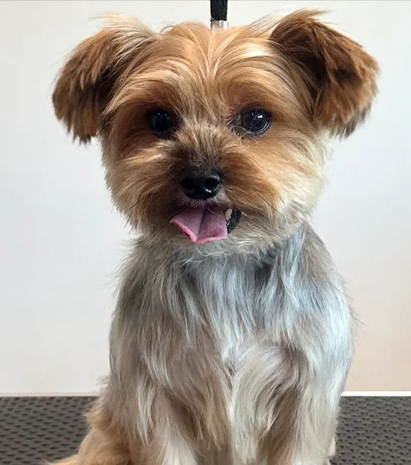
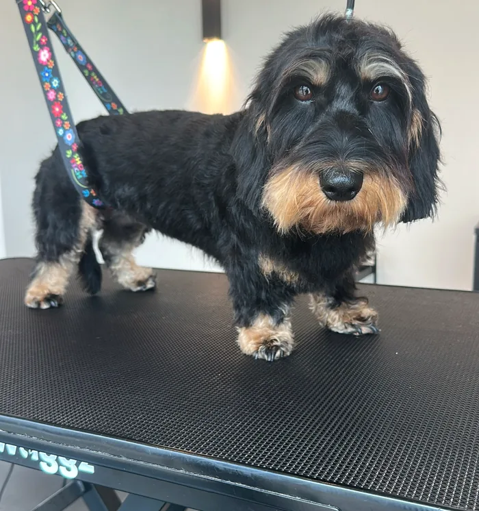
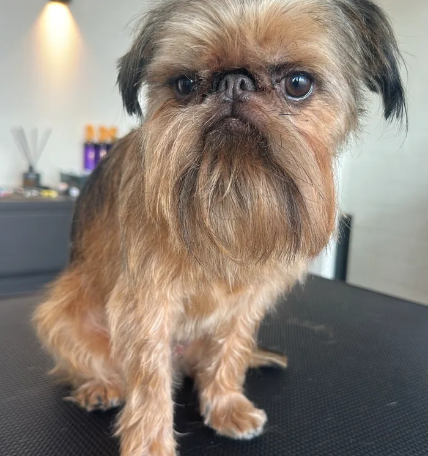
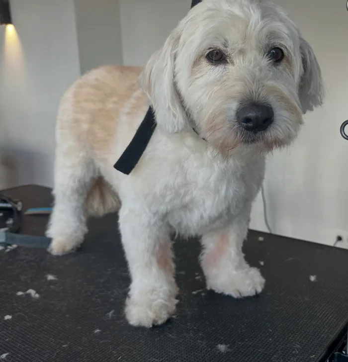
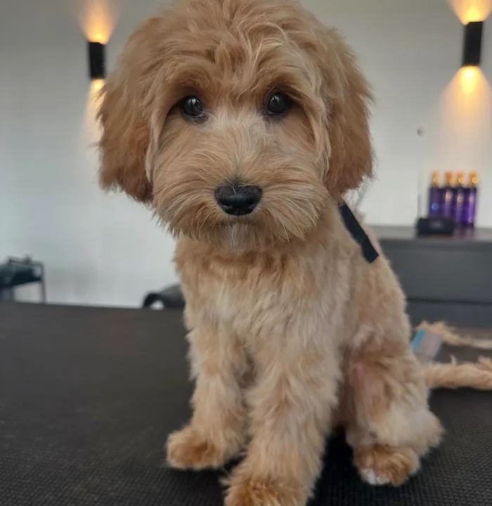
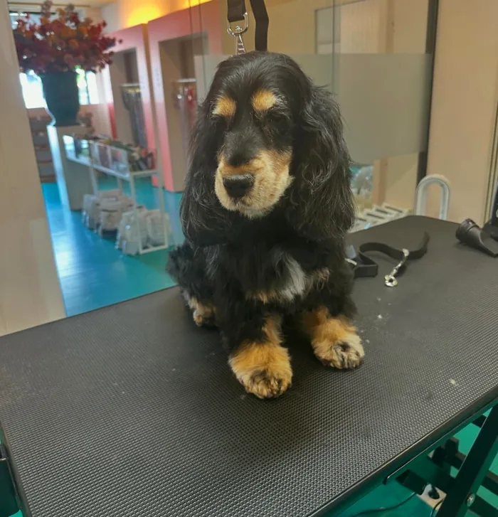
★★★★★"Na 5 jaar zoeken hadden we eindelijk iemand gevonden die ons angstige hondje Nyo een kans wilde geven. Ze ging heel rustig en geduldig met hem om en heeft er uiteindelijk voor gezorgd dat Nyo weer helemaal een mooi hondje is. Wij kunnen Ylse absoluut aan iedereen aanbevelen, zeker ook aan mensen met een angstig of moeilijker hondje."
★★★★★"Omdat het zijn allereerste keer bij een trimsalon was, voelde hij zich in het begin wat ongemakkelijk, maar Ilse stelde hem meteen op zijn gemak en ging heel lief en rustig met hem om. Je merkt echt dat Ilse haar vak kent én een groot hart voor honden heeft."
★★★★★"Mijn Australische herder werd met veel zorg en geduld behandeld. De eigenaar is warm en liefdevol naar zowel baasje als hond. Milo zijn vacht is perfect verzorgd, netjes uitgekamd en mooi afgewerkt."
Stuur een berichtje of bel even. Vertel me welk ras je hebt en wat je graag wil, dan zoeken we samen een moment dat past.
| Maandag tot vrijdag | 8u tot 17u |
| Zaterdag | 8u tot 17u |
| Zondag | Gesloten |
Ik maakte deze demo voor jullie om te tonen wat er kan. Na een kort gesprek maak ik er iets veel persoonlijkers van, helemaal naar jullie wens.
Vrijblijvend. Ik kom langs of we bellen.
Op maat, op jullie eigen domein.
Geen voorschot. Jullie betalen pas als alles klaar is.
Hosting, domeinnaam en kleine wijzigingen, zoals nieuwe openingsuren.
Omdat een voorbeeld meer zegt dan een mail. Zo zien jullie meteen wat er kan, en het kost jullie niets.
Nee. Het gesprek is vrijblijvend. Vinden jullie het niks, dan is het daarmee gedaan.
Na ons gesprek staat jullie site binnen 10 tot 14 dagen online.
Zeker. Jullie domeinnaam kan gewoon blijven, de nieuwe site komt in de plaats van de oude.
Nee, dat doe ik op basis van ons gesprek. Eigen foto's zijn mooi meegenomen, maar niet nodig om te starten.